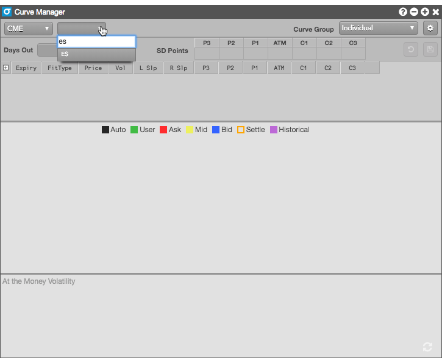
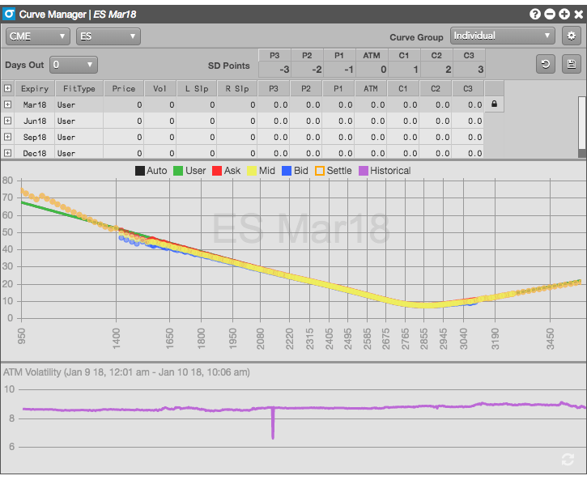
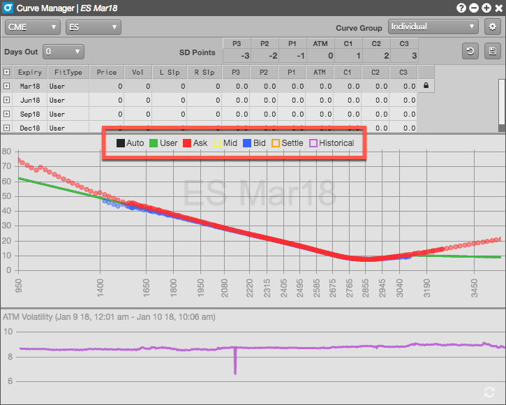
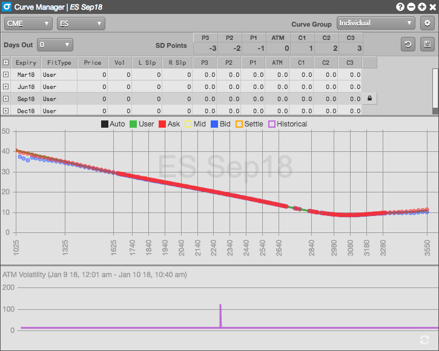
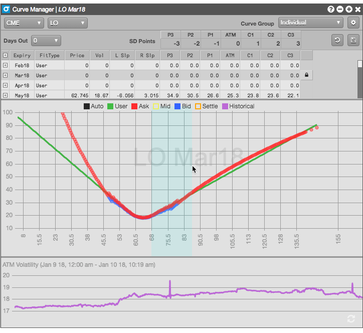
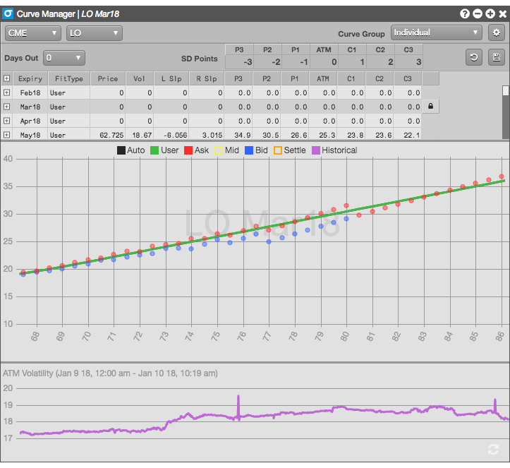

To display volatility curves:
In the two drop-down fields of the Vol Curve Manager, select the desired market and options product, respectively. Note that volatility curves are not supported for all exchanges and products at this time.

The available contracts for the selected product are displayed, and the default curves are displayed for the nearest expiry.

Select the volatility curves you want to show and hide in the grid.

Click anywhere in the row of an options expiration to display its volatility curves.

You can also zoom in on a specific section of the curve to get a closer look at the points that make up the curve.
To zoom in on the curve:
Using the mouse, select the range of strike prices you want to view more closely.

Release the mouse to zoom the curve in to the selected range.

Click the right mouse button anywhere in the grid to return the full curve view.